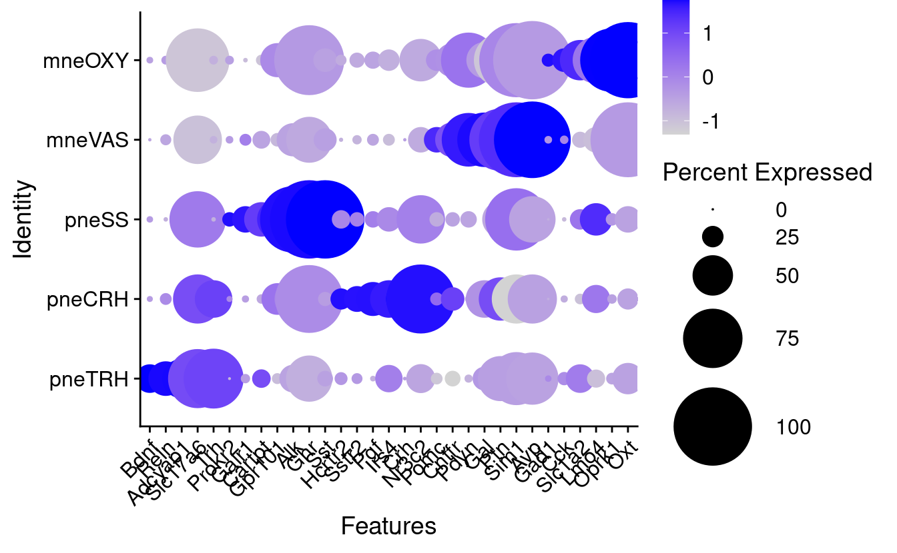
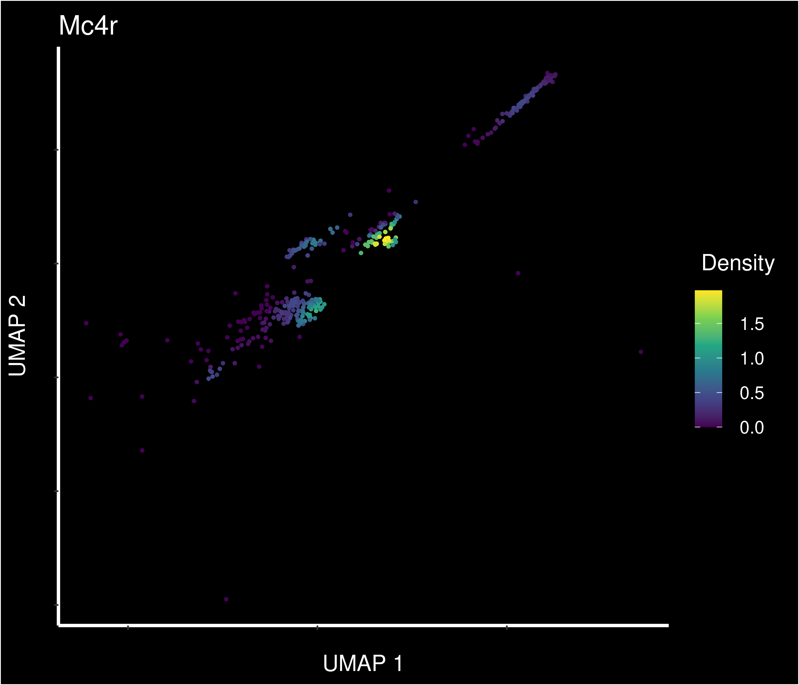
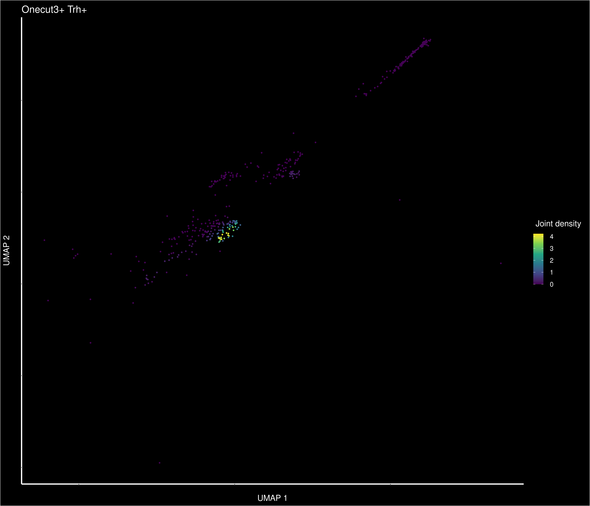

Mc4r in postnatal mouse PVN
Evgenii Tretiakov
2021-05-14
Last updated: 2021-05-14
Checks: 6 1
Knit directory: mc4r/
This reproducible R Markdown analysis was created with workflowr (version 1.6.2). The Checks tab describes the reproducibility checks that were applied when the results were created. The Past versions tab lists the development history.
The R Markdown is untracked by Git. To know which version of the R Markdown file created these results, you’ll want to first commit it to the Git repo. If you’re still working on the analysis, you can ignore this warning. When you’re finished, you can run wflow_publish to commit the R Markdown file and build the HTML.
Great job! The global environment was empty. Objects defined in the global environment can affect the analysis in your R Markdown file in unknown ways. For reproduciblity it’s best to always run the code in an empty environment.
The command set.seed(20210511) was run prior to running the code in the R Markdown file. Setting a seed ensures that any results that rely on randomness, e.g. subsampling or permutations, are reproducible.
Great job! Recording the operating system, R version, and package versions is critical for reproducibility.
Nice! There were no cached chunks for this analysis, so you can be confident that you successfully produced the results during this run.
Great job! Using relative paths to the files within your workflowr project makes it easier to run your code on other machines.
Great! You are using Git for version control. Tracking code development and connecting the code version to the results is critical for reproducibility.
The results in this page were generated with repository version 166941c. See the Past versions tab to see a history of the changes made to the R Markdown and HTML files.
Note that you need to be careful to ensure that all relevant files for the analysis have been committed to Git prior to generating the results (you can use wflow_publish or wflow_git_commit). workflowr only checks the R Markdown file, but you know if there are other scripts or data files that it depends on. Below is the status of the Git repository when the results were generated:
Ignored files:
Ignored: .Rhistory
Ignored: .Rproj.user/
Ignored: code/2021-05-12_morning-plots.Rhistory
Ignored: data/2021-05-13_001-086-446-605-669_adult_mm10-hypothalamus-pvn_alk-thinness-paper-subset-srt4-obj-umap.h5seurat
Ignored: data/2021-05-13_001-086-446-605-669_adult_mm10-hypothalamus-pvn_bottom-lh-excl-srt4-obj-sct-umap.h5seurat
Ignored: data/2021-05-13_001-086-446-605-669_adult_mm10-hypothalamus_srt4-obj-umap.h5seurat
Ignored: data/2021-05-13_001-086-446-605-669_mm10-hypothalamus_srt4-obj-umap.h5seurat
Ignored: data/oldCCA_nae_srt.rds
Ignored: output/tables/2021-05-13_001-086-446-605-669_adult_mm10-hypothalamus-pvn_alk-thinness-paper-subset-srt4-obj-umap.rds
Ignored: output/tables/2021-05-13_001-086-446-605-669_adult_mm10-hypothalamus-pvn_bottom-lh-excl-srt4-obj-sct-umap.rds
Ignored: output/tables/2021-05-13_001-086-446-605-669_adult_mm10-hypothalamus_srt4-obj-umap.rds
Ignored: output/tables/2021-05-13_001-086-446-605-669_mm10-hypothalamus_srt4-obj-umap.rds
Ignored: renv/library/
Ignored: renv/local/
Ignored: renv/staging/
Untracked files:
Untracked: analysis/2021-05-14_pr_adult_pvn_neurons_mc4r.Rmd
Unstaged changes:
Modified: analysis/01_adult_pvn_neurons_mc4r.Rmd
Modified: code/main.R
Modified: output/figures/alk_cells_upset_plot_top_10_neuropept.pdf
Modified: output/figures/alk_cells_upset_plot_top_3_neuropept.pdf
Modified: output/figures/alk_cells_upset_plot_top_5_neuropept.pdf
Modified: output/figures/dotplot_pvn_mc4r.pdf
Modified: output/figures/dotplot_pvn_mc4r_update.pdf
Modified: output/figures/pvn_cells_upset_plot_cell_types_Mc4r.pdf
Note that any generated files, e.g. HTML, png, CSS, etc., are not included in this status report because it is ok for generated content to have uncommitted changes.
There are no past versions. Publish this analysis with wflow_publish() to start tracking its development.
Published subset of adult hypothalamic data (Nature + Cell datasets)
The following `from` values were not present in `x`: 26, 31, 43Step back to see stratification by sequencing samples


PVN neurons?
What we showed could be even better

PVN neurons
Warning: CombinePlots is being deprecated. Plots should now be combined using
the patchwork system.MC-Rs genes
Warning: Could not find Mc1r in the default search locations, found in RNA assay
insteadWarning: Could not find Mc2r in the default search locations, found in RNA assay
insteadWarning: Could not find Mc3r in the default search locations, found in RNA assay
insteadWarning in FeaturePlot(rar2020.srt.pvn, features = mcr_genes, pt.size = 0.7, :
All cells have the same value (0) of RNA_Mc2r.Differential Gene Expression (DGE) test of published groups
Idents(rar2020.srt.pvn) <- "ident"
all_markers_pvn_wtree_final %>%
group_by(cluster) %>%
filter(p_val_adj < 0.01) %>%
slice_max(n = 7, order_by = avg_log2FC) %>%
print(., n = 35)# A tibble: 35 x 7
# Groups: cluster [5]
p_val avg_log2FC pct.1 pct.2 p_val_adj cluster gene
<dbl> <dbl> <dbl> <dbl> <dbl> <chr> <chr>
1 2.76e-22 6.25 0.972 0.572 3.65e-18 mneOXY Oxt
2 1.28e-28 2.73 0.917 0.181 1.69e-24 mneOXY Gm28928
3 1.50e-15 2.17 0.917 0.446 1.98e-11 mneOXY Fam19a1
4 3.67e-12 2.03 0.944 0.612 4.86e- 8 mneOXY Gpc5
5 2.11e-24 1.88 1 0.27 2.79e-20 mneOXY Foxp2
6 1.82e-31 1.87 0.806 0.1 2.41e-27 mneOXY S100a10
7 7.47e-18 1.50 1 0.42 9.87e-14 mneOXY A830018L16Rik
8 7.19e-40 6.63 0.978 0.768 9.50e-36 mneVAS Avp
9 7.62e-41 2.48 1 0.732 1.01e-36 mneVAS Pde4b
10 4.03e-33 2.12 1 0.829 5.33e-29 mneVAS Galntl6
11 5.66e-22 1.84 0.888 0.521 7.48e-18 mneVAS Zfp804a
12 1.22e-15 1.68 0.685 0.302 1.61e-11 mneVAS Gal
13 4.35e-21 1.64 0.966 0.591 5.75e-17 mneVAS Zfp804b
14 4.31e-43 1.62 0.91 0.165 5.70e-39 mneVAS Stxbp6
15 1.53e-33 2.39 0.462 0.014 2.02e-29 pneCRH Crh
16 3.90e-25 1.65 0.877 0.369 5.16e-21 pneCRH Nr3c2
17 6.31e-16 1.39 0.846 0.511 8.35e-12 pneCRH Fmnl2
18 1.65e-15 1.34 1 0.759 2.19e-11 pneCRH Nrxn3
19 1.76e-14 1.32 0.908 0.591 2.33e-10 pneCRH Gpc5
20 1.93e-24 1.15 0.554 0.077 2.55e-20 pneCRH Zbtb16
21 1.58e-15 1.05 0.431 0.08 2.09e-11 pneCRH Ppp1r17
22 8.85e-38 5.55 1 0.198 1.17e-33 pneSS Sst
23 1.22e-19 2.38 1 0.557 1.61e-15 pneSS Trpm3
24 2.62e-17 2.07 0.974 0.509 3.46e-13 pneSS Sorcs1
25 1.29e-15 1.99 1 0.673 1.70e-11 pneSS Ghr
26 2.92e-14 1.77 0.842 0.359 3.87e-10 pneSS Alk
27 1.37e-15 1.75 0.868 0.359 1.81e-11 pneSS Col25a1
28 9.32e- 8 1.50 0.684 0.369 1.23e- 3 pneSS Cntn3
29 3.21e-42 2.38 0.968 0.689 4.25e-38 pneTRH Lingo2
30 8.87e-43 1.98 0.947 0.57 1.17e-38 pneTRH March1
31 2.97e-43 1.95 0.64 0.013 3.93e-39 pneTRH Cbln2
32 3.98e-39 1.95 0.884 0.456 5.26e-35 pneTRH Nav3
33 2.07e- 8 1.88 0.561 0.382 2.74e- 4 pneTRH Il1rapl2
34 1.79e-23 1.69 0.757 0.311 2.37e-19 pneTRH Pcdh11x
35 4.58e-29 1.68 0.788 0.219 6.06e-25 pneTRH Trh Percent of cells expressing MC-Rs in these cells (very low?)
NULLMarker genes for these clusters

Particular combinations of markers in Mc4r containing cells (n sets = 10)
Particular combinations of markers in Mc4r containing cells (n sets = 5)
Particular combinations of markers in Mc4r containing cells (n sets = 3)
Absolute correlation of Mc4r expression with Slc17a6
Absolute correlation of Mc4r expression with Alk
Absolute correlation of Mc4r expression with Crh
Absolute correlation of Mc4r expression with Trh
Absolute correlation of Mc4r expression with Sst
Absolute correlation of Mc4r expression with Avp
Absolute correlation of Mc4r expression with Oxt
Density of Mc4r expressing cells in UMAP (cells similarity) space

Density of expressing cells in UMAP space for whole MC-R gene family

Step back to estimate density of Mc4r and Alk expression across whole adult dataset
Warning: CombinePlots is being deprecated. Plots should now be combined using
the patchwork system.
Density of main PVN markers expressing cells -
Density of main PVN markers expressing cells -
Density of main PVN markers expressing cells -
Density of main PVN markers expressing cells -
It’s on the edge
Wierd Trh part of Crh cluster
Warning: CombinePlots is being deprecated. Plots should now be combined using
the patchwork system.Small lyrical digression about Trh patterns: Onecut3+Trh density (1/4)

Small lyrical digression about Trh patterns: Zic5+Trh density (2/4)
Small lyrical digression about Trh patterns: Onecut3-> Zic5 -> Trh density (3/4)
Warning: CombinePlots is being deprecated. Plots should now be combined using
the patchwork system.
Small lyrical digression about Trh patterns: Onecut3-> Zic5 -> Trh density (4/4)
Excluded from original publication

Back to Mc4r: blend plots of Mc4r and Trh expression

Back to Mc4r: blend plots of Mc4r and Crh expression

Back to Mc4r: blend plots of Trh and Crh expression

Back to Mc4r: Particular combinations of markers in PVN
NULL
R version 4.0.5 (2021-03-31)
Platform: x86_64-pc-linux-gnu (64-bit)
Running under: Ubuntu 20.10
Matrix products: default
BLAS: /usr/lib/x86_64-linux-gnu/openblas-pthread/libblas.so.3
LAPACK: /usr/lib/x86_64-linux-gnu/openblas-pthread/libopenblasp-r0.3.10.so
locale:
[1] LC_CTYPE=en_US.UTF-8 LC_NUMERIC=C
[3] LC_TIME=de_AT.UTF-8 LC_COLLATE=en_US.UTF-8
[5] LC_MONETARY=de_AT.UTF-8 LC_MESSAGES=en_US.UTF-8
[7] LC_PAPER=de_AT.UTF-8 LC_NAME=C
[9] LC_ADDRESS=C LC_TELEPHONE=C
[11] LC_MEASUREMENT=de_AT.UTF-8 LC_IDENTIFICATION=C
attached base packages:
[1] stats graphics grDevices utils datasets methods base
other attached packages:
[1] Nebulosa_1.0.2 patchwork_1.1.1 UpSetR_1.4.0
[4] SeuratDisk_0.0.0.9019 SeuratWrappers_0.3.0 SeuratObject_4.0.1
[7] Seurat_4.0.1 future_1.21.0 magrittr_2.0.1
[10] forcats_0.5.1 stringr_1.4.0 dplyr_1.0.6
[13] purrr_0.3.4 readr_1.4.0 tidyr_1.1.3
[16] tibble_3.1.1 ggplot2_3.3.3 tidyverse_1.3.1
[19] here_1.0.1
loaded via a namespace (and not attached):
[1] readxl_1.3.1 backports_1.2.1
[3] workflowr_1.6.2 plyr_1.8.6
[5] igraph_1.2.6 lazyeval_0.2.2
[7] splines_4.0.5 listenv_0.8.0
[9] scattermore_0.7 GenomeInfoDb_1.26.7
[11] digest_0.6.27 htmltools_0.5.1.1
[13] fansi_0.4.2 tensor_1.5
[15] cluster_2.1.2 ks_1.12.0
[17] ROCR_1.0-11 remotes_2.3.0
[19] globals_0.14.0 modelr_0.1.8
[21] matrixStats_0.58.0 spatstat.sparse_2.0-0
[23] colorspace_2.0-1 rvest_1.0.0
[25] ggrepel_0.9.1 haven_2.4.1
[27] xfun_0.22 RCurl_1.98-1.3
[29] crayon_1.4.1 jsonlite_1.7.2
[31] spatstat.data_2.1-0 survival_3.2-11
[33] zoo_1.8-9 glue_1.4.2
[35] polyclip_1.10-0 gtable_0.3.0
[37] zlibbioc_1.36.0 XVector_0.30.0
[39] leiden_0.3.7 DelayedArray_0.16.3
[41] future.apply_1.7.0 SingleCellExperiment_1.12.0
[43] BiocGenerics_0.36.1 abind_1.4-5
[45] scales_1.1.1 mvtnorm_1.1-1
[47] DBI_1.1.1 miniUI_0.1.1.1
[49] Rcpp_1.0.6 viridisLite_0.4.0
[51] xtable_1.8-4 reticulate_1.20
[53] spatstat.core_2.1-2 bit_4.0.4
[55] rsvd_1.0.5 mclust_5.4.7
[57] stats4_4.0.5 htmlwidgets_1.5.3
[59] httr_1.4.2 RColorBrewer_1.1-2
[61] ellipsis_0.3.2 ica_1.0-2
[63] farver_2.1.0 pkgconfig_2.0.3
[65] sass_0.4.0 uwot_0.1.10
[67] dbplyr_2.1.1 deldir_0.2-10
[69] utf8_1.2.1 labeling_0.4.2
[71] tidyselect_1.1.1 rlang_0.4.11
[73] reshape2_1.4.4 later_1.2.0
[75] munsell_0.5.0 cellranger_1.1.0
[77] tools_4.0.5 cli_2.5.0
[79] generics_0.1.0 broom_0.7.6
[81] ggridges_0.5.3 evaluate_0.14
[83] fastmap_1.1.0 yaml_2.2.1
[85] goftest_1.2-2 bit64_4.0.5
[87] knitr_1.33 fs_1.5.0
[89] fitdistrplus_1.1-3 RANN_2.6.1
[91] pbapply_1.4-3 nlme_3.1-152
[93] mime_0.10 xml2_1.3.2
[95] hdf5r_1.3.3 compiler_4.0.5
[97] rstudioapi_0.13 plotly_4.9.3
[99] png_0.1-7 spatstat.utils_2.1-0
[101] reprex_2.0.0 bslib_0.2.4
[103] stringi_1.6.1 highr_0.9
[105] lattice_0.20-44 Matrix_1.3-3
[107] vctrs_0.3.8 pillar_1.6.0
[109] lifecycle_1.0.0 BiocManager_1.30.15
[111] spatstat.geom_2.1-0 lmtest_0.9-38
[113] jquerylib_0.1.4 RcppAnnoy_0.0.18
[115] bitops_1.0-7 data.table_1.14.0
[117] cowplot_1.1.1 irlba_2.3.3
[119] GenomicRanges_1.42.0 httpuv_1.6.1
[121] R6_2.5.0 promises_1.2.0.1
[123] KernSmooth_2.23-20 gridExtra_2.3
[125] IRanges_2.24.1 parallelly_1.25.0
[127] codetools_0.2-17 MASS_7.3-54
[129] assertthat_0.2.1 SummarizedExperiment_1.20.0
[131] rprojroot_2.0.2 withr_2.4.2
[133] sctransform_0.3.2 GenomeInfoDbData_1.2.4
[135] S4Vectors_0.28.1 mgcv_1.8-35
[137] parallel_4.0.5 hms_1.0.0
[139] grid_4.0.5 rpart_4.1-15
[141] rmarkdown_2.8 MatrixGenerics_1.2.1
[143] Rtsne_0.15 git2r_0.28.0
[145] Biobase_2.50.0 shiny_1.6.0
[147] lubridate_1.7.10